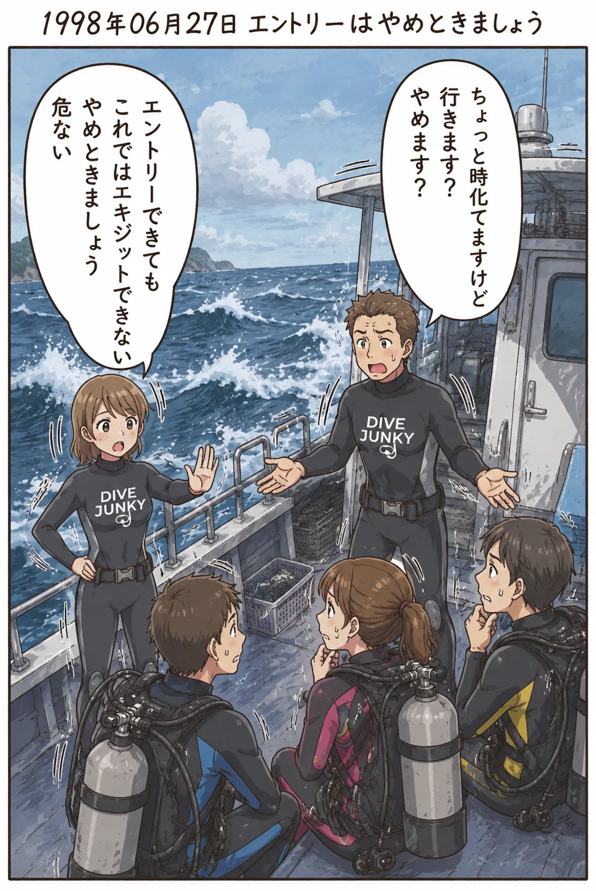

The road Orz passed by 2026 年 06 月
06 月 13 日 ( 土 )
Dive #166 エントリー可否判断と認知飽和
今日は高プレッシャー時における人間の認知飽和についてのお話です。

ダイバーの中には図のようなシーンに遭遇したことがある人がいらっしゃるんじゃないでしょうか。
ボートが出向する時はベタ凪状態だったのに、途中で風雨になって、ダイビングポイントに着いた頃には海が時化状態になってしまう。本当にこれでエントリーして大丈夫なのか？と思える瞬間。
そしていつもの頼もしさが消失した表情の引率インストラクターの口から「どうします？行きます？やめます？」と発せられる瞬間。
昔のぼくなら、いやお前が止めろよ、引率インストラクターなんだから最終的に責任は全部自分の肩にかかってくるくらいわかるだろ、とアシスタント・インストラクターの分際で考えたりしてました (一応業務経験があったので)。
でもこのような考えをまもなくぼくはしなくなります。同様の経験を何度かするうちに、これはいろんな任務要求でがんじがらめになってるインストラクターのヘルプサインだって気がつくようになります。
もちろん海を見ればゲストを連れて海に入るべきでないのは明らかです。でもインストラクターはショップの従業員でもあります。その日の売り上げやダイビング遂行に対する責任も背負っています。
またダイビング中止によるゲストからのクレーム処理や苦情処理も頭に想起されます。もちろんほぼ 100% お金が絡む話になります。
インストラクターに一気に様々な責任が同時発生します。
個々の責任はそれぞれ対処可能です。しかし互いに両立できない要求が同時に発生し、しかも短時間で意思決定を迫られると、人は認知飽和を起こします。
認知飽和を起こすと、人はまともな判断ができなくなります。人の脳はオーバーフローすると処理を停止します。フリーズします。頭の中が真っ白になります。これはぼく自身も 1999 年に和歌山県串本町の住崎で経験しています。
この例では、ダイビングを中止する、の一択なのですが、その単純な決定をインストラクターであっても、できなくなることがあります。これはそのインストラクターが無能なのではありません。航空機事故や公共交通機関の事故でも数多く報告されている認知飽和と同種の現象です。
このようなときは本当にフリーズしてしまうか、頭にふと浮かんだ不適切な解決策を口にしてしまうことがあります。それが時化ている海を前にしたインストラクターから発せられる「どうします？行きます？やめます？」の正体だったりします。
そういうときぼくは割と積極的に介入していました。
「ちょっとこの荒れかたではエントリできてもエキジットできるのはインストラクターの彼と、ぼく、そしてアシスタント・インストラクター候補生の彼の３人くらいしか思いつきません。他の方はエキジット時に、もしものことがあるかもしれません。中止しましょう。中止すれば海が穏やかなときに最高の状態のこのポイントにまた潜りに来ることができますから」
なんてことを言っていました。
これはぼくの判断力自慢などではありません。ぼくが経験していた中では毎回ぼくが引率責任を負っていたことがなく、認知負荷が高まる立場になく、ニュートラルな状態で状況判断ができていたに過ぎないからになります。
スタッフという立場ではなかったので、このダイビングに対する売り上げ上の責任もない、このダイビングの遂行責任もない、クレーム処理に対する責任もない、背負うべき責任がないので、目の前のダイバーの安全だけを考えればよかったという、中止判断をする上で有利な立場にあったに過ぎません。
- Category :
- #Records of Orz's Road
- #ダイビング
- #スクーバダイビング
- #事故防止
- #認知負荷
- #ヒューマンエラー